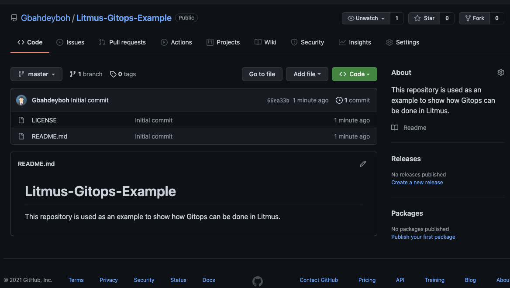
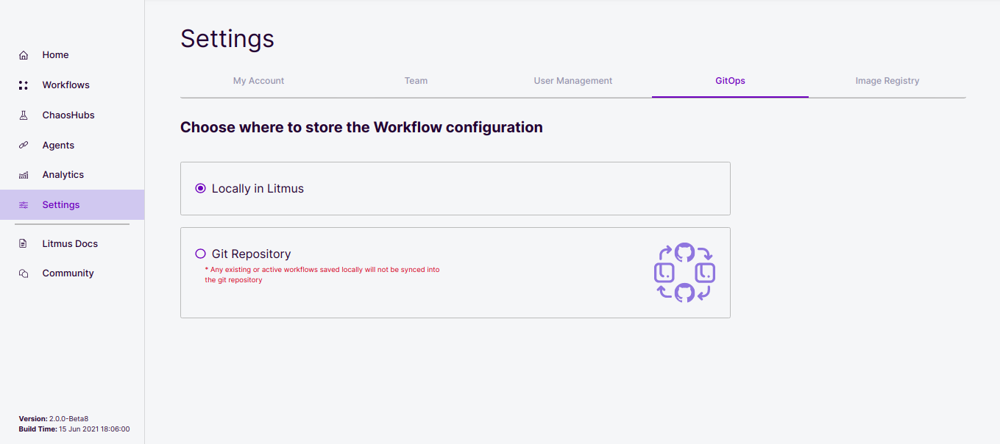
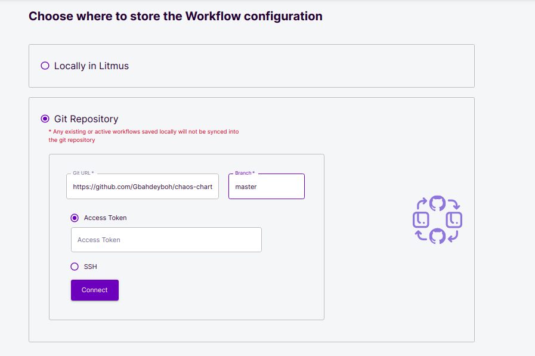
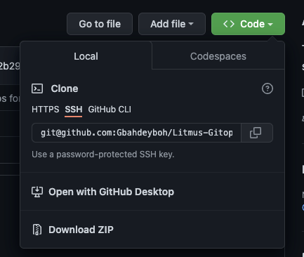
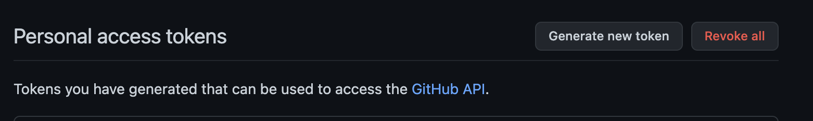
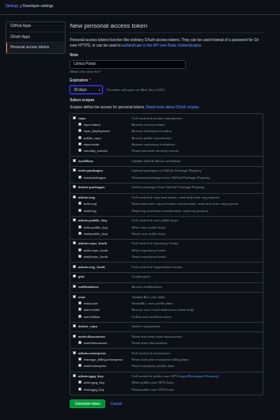
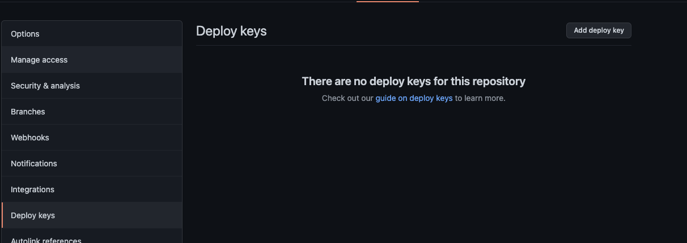
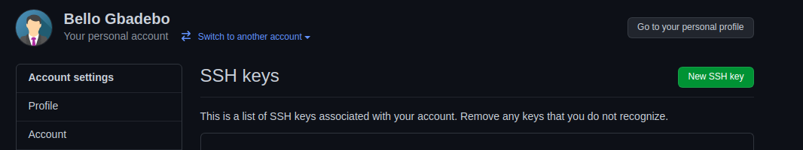
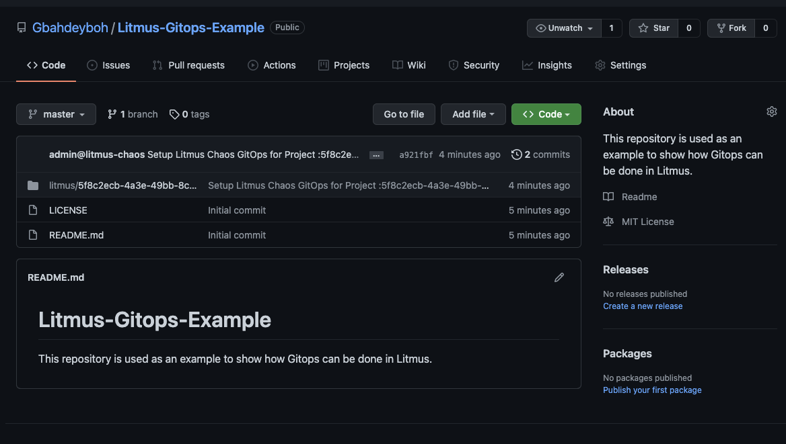

Welcome
In this tutorial, you will learn how to integrate your Litmus portal with Gitops, how to create remote experiments workflows on Github and have them synced automatically with your local cluster.
What you will learn
- What Gitops is.
- How to connect a new chaos hub to a Github repository.
In this tutorial, you would first go over what Gitops is, why it is useful and the different types of Gitops we have. Next, you would create our own remote chaos hub repository on Github by forking an already existing repository. Then, you will learn how to connect this remote repository to your Litmus portal using an access token or an ssh key.
Pre-Requisites
- Minikube 1.2.0 or later. Recommended sizing of at least: 2 CPUs, 8GB memory, 10GB of disk space (for persistent volume creation)
- Helm3 or Kubectl
- Access to the Internet from Cluster (For Air-Gapped Environments refer to this guide)
- Have Litmus 2.x.x installed.
- Basic Understanding of Litmus.
Gitops was released in Litmus v2.0 Beta1. In Litmus, Gitops enables you to configure a single source of truth for your chaos workflows and experiments, such that any changes made to either the artifacts stored in the configured git repository or the portal will automatically sync with each other. This allows you to create and execute workflows directly from git.
The two types of Gitops we have are mainly frontend and backend Gitops, however, this tutorial will only be focusing on the frontend gitops.
Frontend Gitops enables you to connect your portal with any git repository and the portal will sync all your workflow manifests with that git repository. You can then make changes directly on Github and it will reflect on the portal as well.
In this tutorial, you would be using an entirely new repository for your Gitops. Navigate to GitHub and create a new repository. Here's an example of one I created here.

Open your Litmus portal and Navigate to the settings tab, at the top navigation bar, select the Gitops option.

Select the git repository option and type in the URL of your repository and the branch in which your experiments resides in.

NOTE: If you intend to use ssh, it is necessary that you add your ssh GitHub URL instead of https.

The portal provides two ways in which you could link a repository. You can connect to a Github repository using either of the following.
- An access Token
- SSH key
Using an Access Token
The access token option is selected by default, this token can be gotten from your Github profile. To get this access token, navigate to github.com/settings/tokens and click on the Generate new token button.

Add a description to the note section of the token, select and expiration date, then select scopes for the token. The scopes let GitHub know what permissions levels the token has, select the scopes you want but specifically give the token read access to your repositories and click on the Generate token button.

Make sure you copy your token once it is added. You won't be able to copy it afterwards, you will need to generate a new one.

Go back to the portal and paste this token into the access token field, then click the Submit Now button.
Using SSH
Another option Gitops provides is the SSH option. If you selected the SSH key option, you will be presented with an already generated SSH key.
Click the Copy button to copy this key and add it to your account. There are two ways this can be added:
- By adding it to your specific repository(recommended).
- By adding it to your profile settings.
Adding ssh to a specific repository
This is recommended because it gives the keys access to only that repository and nothing else.
Navigate to your repository and click the settings button at the top right nav.

Select the Deploy keys in the vertical menu and click the Add deploy key button.

Paste the copied ssh key, and give it a title. Before you save, there is an Allow write access checkbox by the bottom left, make sure it is selected so that the key will be allowed to write to your repository.
This key will only have access to this repository.
Adding ssh to your profile settings
This is not the recommended way to do it because this will give your ssh key access to your other repositories.
Navigate to github.com/settings/ssh.

You will see a New SSH key button. Click this button, add a title and paste in your SSH key.
Then, click the Add SSH key button.

Verifying Gitops
Navigate back to your repository and reload, you would observe that Litmus has automatically pushed a commit to your repository.

To further verify that this is working as expected, schedule a new workflow on your Portal. You will notice that immediately this workflow is scheduled, Litmus automatically pushes this workflow manifest to your designated Gitops repository.
If this workflow is edited on Github, it will send it back to your Litmus portal making it serve as a single source of truth for all your workflows.
In this tutorial, we covered what Gitops is and why it is useful. We showed how you can connect your Litmus portal to a remote Github repository using two different Gitops method -- Access Tokens, and SSH. To learn more about Litmus and the Litmus Portal, you can refer to Litmus Documentation.
Please visit us in our LitmusSlack Channel (in Kubernetes workspace) and tell us how you like LitmusChaos and this tutorial! We are happy to hear your thoughts & suggestions!
Also, make sure to follow us on Twitter to get the latest news on LitmusChaos, our tutorials, and the newest releases!